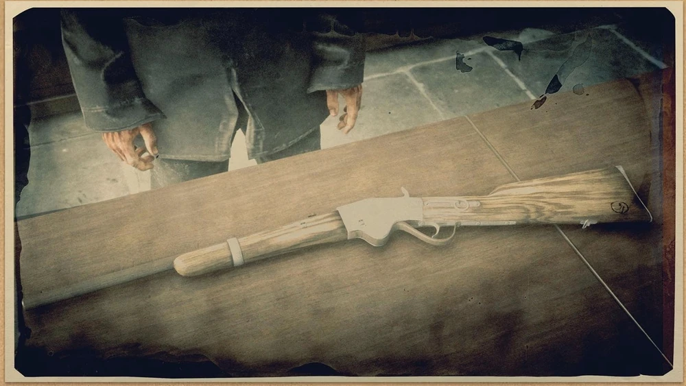
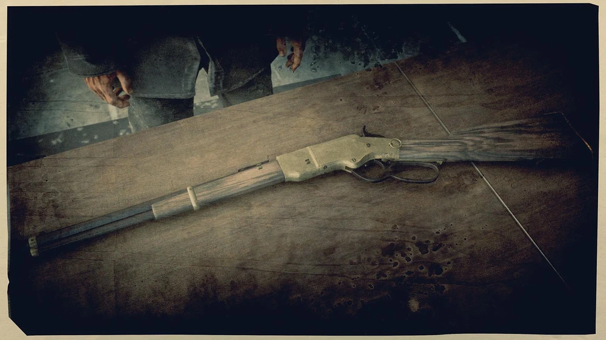
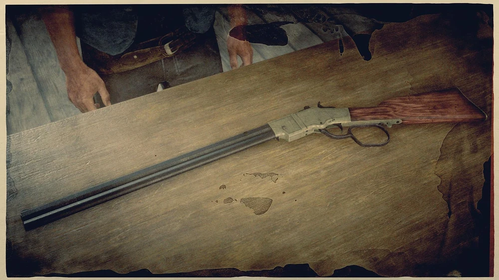

REPEATERS
Carbine repeaters
A reliable and popular repeating rifle, the Buck Carbine provides medium damage and a decent firing rate, with quick reload speeds thanks to the tube-loaded magazine in the weapon's stock. A good, balanced choice for hunting and medium-range combat, this gun has an ammo capacity of seven rounds, and can use Regular, High Velocity, Split Point, Express and Explosive repeater ammo.
Evans repeater

The B.D. & Co. Evans Repeater rifle has a high bullet capacity and is devastating at medium and long range, with an especially high rate of fire. This gun can use Regular, High Velocity, Split Point, Express and Explosive repeater ammo. It also has customization options, including Stocks, Sights and Wraps.
Lancaster repeater
The Lancaster Repeater is a well-rounded gun that uses a fast lever-action system to load the next cartridge. It has the lowest damage of all repeating rifles, but the quick firing rate and high accuracy give it the advantage. This gun has an ammo capacity of fourteen rounds, and can use Regular, High Velocity, Split Point, Express and Explosive repeater ammo
Litchfield repeater
The Litchfield Repeater is a great choice for hunting, with the best damage of all repeating rifles and a large ammo capacity. Despite a slower fire rate and reload speed, the Litchfield excels at medium range combat; perfect when needing to clear an area. While very damaging, the accuracy of the gun can become a issue while moving or at distances.